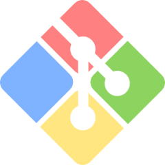

Git
Frozen in Launcher GPL-2.0Industry-standard distributed version control system for tracking project history.
Role in the Game Stack
Git tracks revision history for game source code, scripts, configuration files, and project assets. It enables branching strategies, collaborative developer merges, and atomic commit histories for indie studios and open-source contributors.
Key Capabilities & Strengths
- Decentralized branching, merging, and revision tracking
- Cryptographically secured commit tree verification
- Universal interoperability across GitHub, GitLab, and local remotes
- Large file support via Git LFS
Within sovereign and telemetry-free creative pipelines, Git serves as a direct open-source alternative to proprietary software.
OGS Launcher Integration & Frozen Releases
The Open Game Stack Launcher packages verified, immutable builds of Git. These releases are cached locally and launched without network access, vendor telemetry, or external licensing servers.
| Version | Size | SHA-256 Checksum | Executable | Notes | Archive |
|---|---|---|---|---|---|
2.56.0.4 |
149.4 MB | 359d6c99ff158e510f15c9378d740cbd4a2723695206f45a86c8adc596a35531 |
git-bash.exe |
Release Notes | Download ZIP |
Project Manifest Configuration (ogs_stack.json)
Pin Git to this frozen version in your project repository by declaring it inside your ogs_stack.json manifest:
{
"name": "MyGameProject",
"version": "1.0.0",
"tools": [
{
"id": "git",
"version": "2.56.0.4",
"category": "Code"
}
]
}Open-Source Vital Signs
Project health, licensing, and cross-platform runtime support for Git:
| Software License | GPL-2.0 |
|---|---|
| Supported Platforms | Windows Linux macOS |
| Stack Category | Code |
| Official Website | https://git-scm.com/ |
| Source Repository | https://github.com/git/git |
Getting Started & Learning Resources
Official documentation, tutorials, and community hubs to help game developers master Git:
- [Documentation] Pro Git Book
- [Documentation] Git Reference Manual
- [Releases] Git for Windows Releases